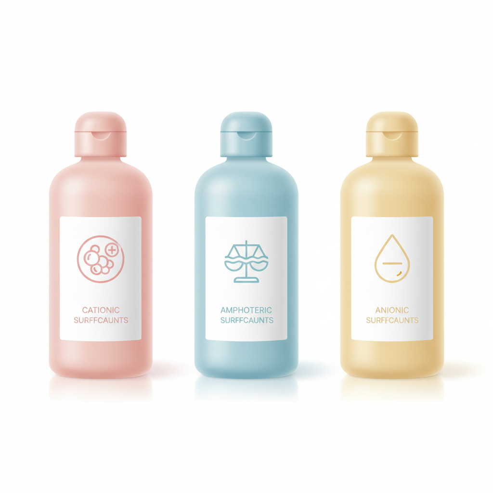
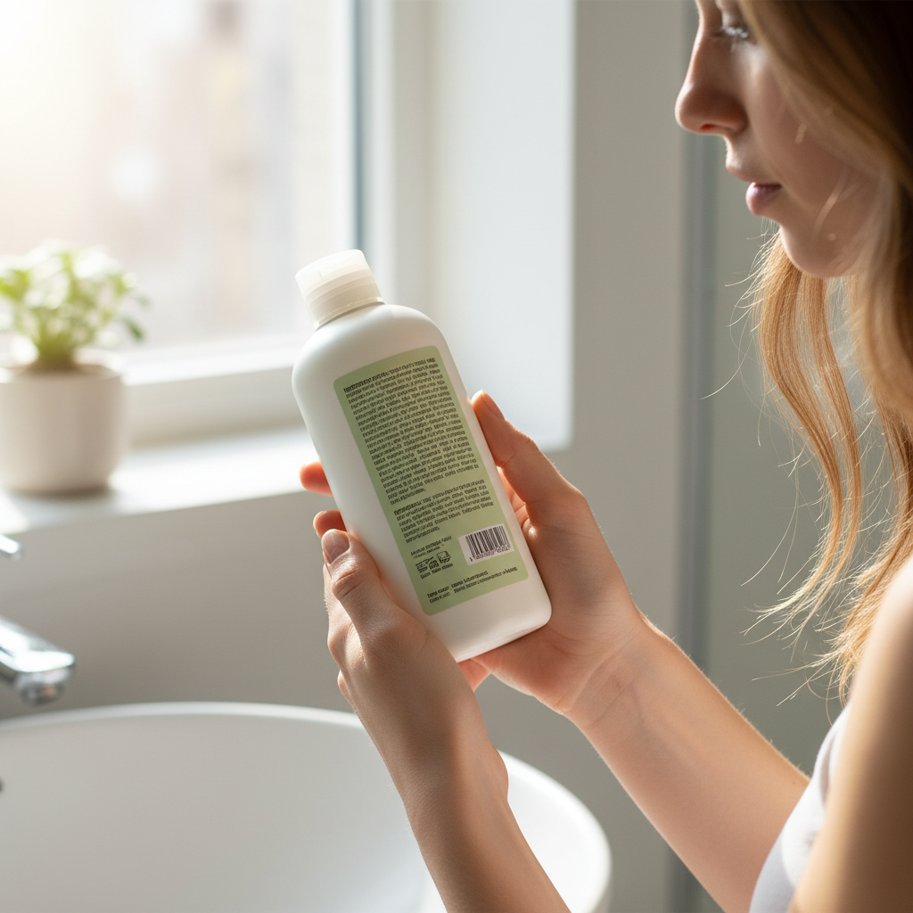

ドラッグストアでシャンプーを選ぶとき、ボトルの裏をひっくり返して成分表を見たことはありますか。たぶん、見たことがある人でも「カタカナが並んでいて何が何だかわからない」で終わっている人がほとんどだと思います。
でも、あの成分表には髪の未来が書いてあります。大げさに聞こえるかもしれないけれど、シャンプー選びで最も差がつくのは、パッケージでもCMでもなく、洗浄成分です。私はサロンで20年以上お客様の髪を見てきましたが、髪が傷む原因の多くは毎日のシャンプーが合っていないことにあります。
この記事では、成分表の基本的な読み方と、洗浄成分を見分けるコツだけに絞って説明します。読み終わるころには、自分でシャンプーのボトル裏を見て「これは自分に合いそうだな」と判断できるようになっているはずです。
成分表示のルールは意外とシンプル

化粧品の成分表示には法律で決まったルールがあります。配合量の多い順に記載すること。これだけ覚えておけば十分です。
シャンプーの成分表を見ると、最初に来るのはほぼ必ず水です。シャンプーの大半は水でできているので当然ですね。そして2番目か3番目あたりに出てくるのが洗浄成分。ここが勝負どころです。
よく「シャンプーの成分は全部覚えないといけないんですか」と聞かれますが、そんな必要はありません。成分表に並んでいるのは20種類から30種類くらいありますが、洗浄成分さえ見分けられれば、そのシャンプーの性格はだいたいわかります。残りの成分は保湿剤や香料、防腐剤などで、もちろん大切ではあるものの、髪への影響が一番大きいのは洗浄成分です。
洗浄成分は大きく3タイプ
シャンプーに使われる洗浄成分は、ざっくり3つのグループに分けられます。
高級アルコール系
成分名にラウリル硫酸Na、ラウレス硫酸Naと書いてあるものです。硫酸の2文字が目印になります。市販シャンプーの多くがこのタイプで、泡立ちが良くて洗浄力が強い。原料コストも安いので、価格を抑えたいメーカーが使いやすい成分です。
ただし洗浄力が強いということは、必要な皮脂まで取り去ってしまうということでもあります。頭皮がカサつく、髪がパサつく、カラーの色落ちが早い。こうした悩みを抱えている人は、まず成分表で硫酸系が上位に来ていないかを確認してみてください。
アミノ酸系
成分名にココイルグルタミン酸Na、ラウロイルメチルアラニンNaなど、アミノ酸の名前が入っているもの。グルタミン酸、アラニン、グリシン、サルコシンあたりが見つかれば、アミノ酸系と思ってまず間違いありません。
アミノ酸系の洗浄成分は、髪や肌と同じ弱酸性で洗えるのが特徴です。洗い上がりがつっぱりにくく、カラーやパーマをしている髪にも負担が少ない。その代わり泡立ちは硫酸系に比べると控えめで、原料コストも高いため、製品価格は上がりやすい傾向があります。
ベタイン系
コカミドプロピルベタイン、ラウラミドプロピルベタインなどが代表格です。成分名にベタインが入っているので見つけやすい。洗浄力はマイルドで、泡立ちの補助としてアミノ酸系やほかの成分と組み合わせて使われることが多い成分です。赤ちゃん用のシャンプーにも使われるくらい刺激が少ないのが特徴です。
アミノ酸シャンプーと書いてあるのに中身は違う、というケース
ここが少しやっかいなところです。パッケージにアミノ酸シャンプーとかアミノ酸配合と書いてあっても、メインの洗浄成分がアミノ酸系とは限りません。
たとえば、成分表の2番目にラウレス硫酸Naが来ていて、その後ろのほうにアミノ酸系の成分が少しだけ入っている。これでもアミノ酸配合とは名乗れるわけです。嘘ではないけれど、実質的には硫酸系シャンプーの洗浄力がベースになっています。
確認する方法はひとつだけ。成分表の順番を見ることです。水の次に来る洗浄成分が何かで、そのシャンプーの性格は決まります。
硫酸フリーは正義なのか

SNSやネット記事で硫酸フリーが良いという話をよく見かけます。間違いではないのですが、少しだけ補足が必要です。
硫酸系の洗浄成分が悪いわけではなく、合う人と合わない人がいるというのが正確なところです。たとえば頭皮の皮脂が多くてベタつきやすい人には、しっかり洗える硫酸系のほうが合う場合もあります。毎日外で汗をかく仕事をしている人も同様です。
一方で、乾燥肌の人、カラーやパーマを繰り返している人、髪のダメージが気になる人は、アミノ酸系やベタイン系のほうが向いていることが多い。洗浄力が穏やかなぶん、髪と頭皮に必要なうるおいを残しながら洗えるからです。
大切なのは硫酸フリーかどうかではなく、自分の頭皮と髪の状態に合った洗浄力を選ぶこと。そのために成分表を読めるようになっておくと、パッケージの宣伝文句に振り回されずに済みます。
成分表でわかるもうひとつのこと
洗浄成分以外に、成分表からもうひとつ読み取れることがあります。それは補修・保湿成分がどれくらい入っているかです。
成分表の後半に出てくる成分は配合量が少ないものですが、その中にケラチン、ヒアルロン酸Na、加水分解シルクといった名前が見つかれば、髪の補修や保湿にも気を配った処方であることがわかります。
ただし繰り返しますが、まず見るべきは洗浄成分です。どんなに良い補修成分が入っていても、ベースの洗浄力が強すぎれば、補修より先に髪を傷めてしまいます。土台が大事、という話です。
実際にボトルの裏を読んでみよう
ここまで読んだら、家にあるシャンプーのボトルを手に取って、裏の成分表を見てみてください。
水の次に来ている成分は何ですか。硫酸が入っていますか。グルタミン酸やアラニンが見つかりますか。ベタインがありますか。
これだけで、今使っているシャンプーの洗浄力がどれくらいかがわかります。もし髪や頭皮に悩みがあるなら、洗浄成分を変えてみるだけで変化を感じる人は少なくありません。高い美容液を買い足すより先に、毎日使うシャンプーの洗浄成分を見直すほうが、コストも手間もかからない髪質改善の第一歩です。
| 洗浄成分タイプ | 成分名の目印 | 洗浄力 | こんな人に向いている |
|---|---|---|---|
| 高級アルコール系 | 硫酸 | 強い | 皮脂が多い、さっぱり洗いたい |
| アミノ酸系 | グルタミン酸、アラニン、グリシン | 穏やか | 乾燥肌、カラー毛、ダメージ毛 |
| ベタイン系 | ベタイン | マイルド | 敏感肌、赤ちゃん |